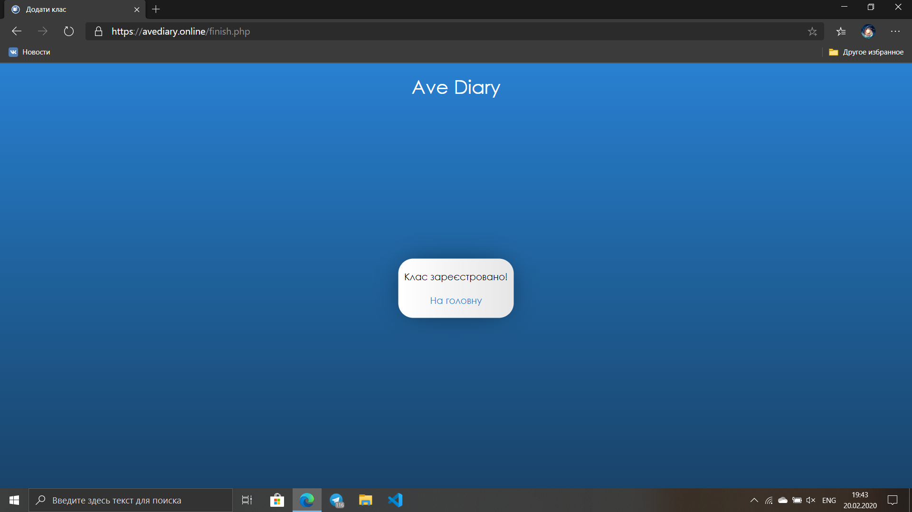

Ave Account
Ave Account
 Ave Diary Lite App
Ave Diary Lite App Ave Diary Bot Telegram
Ave Diary Bot TelegramAve Diary avediary.online
Ave Diary - ваш простой электронный дневник, который поможет вам в оптимизации учебного процесса.
Вы - первый пользователь класса.
Войдите в свой аккаунт, после чего увидите окно.
Если ваш класс ещё не зарегистрирован, нажмите “Зареєструвати мій клас”. Если ваш класс уже зарегистрирован, перейдите до следующего пункта инструкции.
Выберите свою страну, город и школу.
Выберите класс, придумайте логин класса. ВНИМАНИЕ! Логин класса очень важен, Поэтому обязательно запомните его и сделайте как можно проще. После этого выберите свою роль в классе.

Поздравляем, класс создан!
Присоединиться к классу
Войдите в свой аккаунт, после чего увидите окно.
Если ваш класс уже зарегистрирован, нажмите “Мій клас вже зареєстровано”. Если ваш класс не зарегистрирован см. пункт выше.
Введите логин вашего класса
Ждите, пока модераторы примут вас.
Вы - обычный ученик
Вы - впервые на сайте
Это главная страница. На ней вы можете посмотреть домашнее задание, расписание на завтра, загрузить файлы с Ave Drive. Чтобы посмотреть все задания, нажмите “Все завдання”.
Тут вы можете посмотреть все задания в виде дневника. Чтобы перелистывать страницы используйте стрелочки.
Вы - модератор
Принять нового ученика
На главной странице в меню у графы ученики написано количество новых учеников. Если нет ни одного запроса, то цифры нет. Для того, чтобы увидеть список учеников и новые запросы - нажмите на “Учні”.
Для того, чтобы принять ученика - нажмите “Прийняти”, чтобы удалить запрос - нажмите “Видалити”.
После чего выберите роль ученика и нажмите “Прийняти”.
Нажмите “Повернутися”.
Если запрос отправлен через Ave Teacher, то его можно принять только как модератора или удалить запрос.
Изменить расписание
Чтобы изменить расписание нажмите “Змінити розклад”.
Введите своё расписание и нажмите “Додати”.
Добавить предмет
Чтобы добавить предмет нажмите “Додати предмет” при изменении расписания или на странице “Додати завдання”.
Добавить задание на один предмет
Чтобы добавить задание по дате нажмите “Додати завдання” на главной странице.
После чего введите задание, выберите предмет и дату, затем нажмите “Додати”.
Добавить задание на несколько дней
Чтобы добавить задание на несколько дней нажмите “Все завдання” на главной странице.
Введите задание, затем нажмите “Додати”.
Настройка доступа через Lite
Чтобы настроить доступ через Ave Diary Lite нажмите “Налаштувати доступ через Lite”.

После чего выберите режим доступа
Редактирование данных класса
Чтобы изменить данные класса нажмите “Редагувати данні класу”.
После чего измените год обучения и букву.
Ночная тема (Функция временно недоступна)
Чтобы включить ночную тему нажмите на луну.
Чтобы включить обычную тему нажмите на солнце.